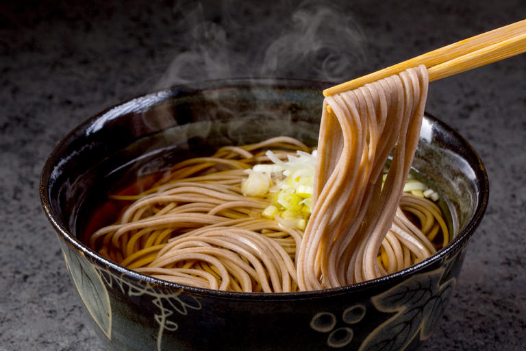

Soba

Japanese soba can be served hot or cold - I prefer hot but in the summer cold soba is delicious.
Ingredients
- Soba noodles
- Soy sauce
- Mirin
- Dashi
- Green Onions (Chopped finely)
Steps
- Start by making the broth - the basic soba broth is called Kake. In a pot mix the soy sauce, mirin and dashi and bring to the boil.
- While the broth is cooking, boil some water for the noodles.
- The soba only take about 3 minutes to cook, so be vigilant. Drain the water and wash the noodles under running water.
- Place the noodles in a bowl and top with the warm kake. Top with chopped onions and enjoy.